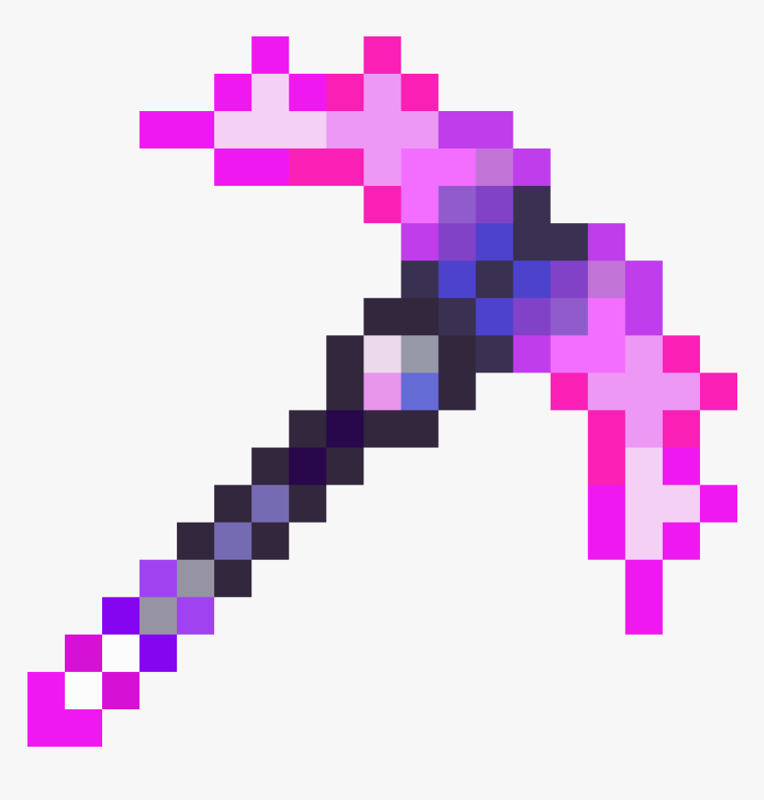

Important Features
Tools
Pickaxes
Pickaxes are tools used to remove ("mine") blocks and furniture, normally converting them to item form. They cannot remove background walls, nor cut down trees. They also double as basic melee weapons. Some of the Hardmode-tier pickaxes have drill counterparts, which as of will mine faster than their pickaxe counterparts. New players spawn with a Copper Pickaxe when starting a new Classic character, and an Iron Axe when starting a new Journey character.
Axes
Axes are basic tools that a player can use to destroy trees and cacti, including their variants. They can also be used as weapons. New players choosing any of the Classic mode difficulty settings (Classic, Mediumcore, Hardcore) will always spawn with a Copper Axe, while Journey Mode players start with an Iron Axe.
Hammers
Hammers are tools that are used to break background walls and to create half-blocks and slopes. Higher-level hammers (e.g. the Chlorophyte Warhammer) have high damage and can serve as weapons. Some can serve as both hammers and axes at the same time, known as hamaxes. New players do not spawn with a hammer, unless they are in Journey Mode in which case an Iron Hammer is provided for them.
Hooks
Hooks are a class of tools which aid the player in traversing terrain. When used, hooks fire a chain that latches to a surface or platform and pulls the player towards it. A hook is an essential tool which offers significant freedom from terrain height restrictions as well as being a fast movement option, and will often be the first major mobility tool a player acquires. A variety of hooks are available at all stages of the game
Bosses
Wall of Flesh
The Wall of Flesh is a towering wall that spans the entire screen height. It has 8,000 / 11,200 / 14,280 health. It is summoned by throwing a Guide Voodoo Doll into a pool of lava while the Guide is alive. It is the final boss of pre-Hardmode, because defeating it will irreversibly enable Hardmode in the world. It can drop several powerful items, one of them being the guaranteed drop Pwnhammer which can be used to break Demon Altars or Crimson Altars in order to spawn various game-advancing Hardmode ores.

Plantera
Plantera is an enormous flower with 30,000 / 42,000 / 53,549 health. She is awoken by destroying a Plantera's Bulb, which is found in the Underground Jungle after defeating all three mechanical bosses. If the player exits the Underground Jungle, Plantera becomes "enraged", gaining a significant boost to her stats.

Golem
Golem is a large boss with a combined total of 39,000 / 58,500 / 74,586 health. It is summoned by using a Lihzahrd Power Cell at the Lihzahrd Altar in the Jungle Temple. In order to access the Jungle Temple, Plantera must be defeated to obtain the Temple Key.

Moon Lord
The Moon Lord is the final boss of Terraria, and drops a majority of the endgame items, such as the Meowmere. It also drops Luminite, an ore used to craft many endgame armor sets and tools. It is summoned by defeating all four of the Celestial Pillars from the Lunar Events, or by using a Celestial Sigil. It has a combined health of 145,000 / 217,500 / 277,311, the most health of any boss in the game.